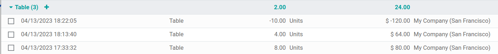

Average price on returned goods
Average cost valuation (AVCO) is an inventory valuation method that evaluates cost based on the total cost of goods bought or produced during a period, divided by the total number of items on-hand. Inventory valuation is used to:
reflect the value of a companys assets;
keep track of the amount of unsold goods;
account for monetary value in goods that have yet to generate profit;
report on flow of goods throughout the quarter.
Because AVCO uses the weighted average to evaluate the cost, it is a good fit for companies that sell only a few different products in large quantities. In Odoo, this costing analysis is automatically updated each time products are received.
Thus, when shipments are returned to their supplier, Odoo automatically generates accounting entries to reflect the change in inventory valuation. However, Odoo does not automatically update the AVCO calculation, because this can potentially create inconsistencies with inventory valuation.
Note
This document addresses a specific use case for theoretical purposes. For instructions on how to set up and use AVCO, refer to the inventory valuation configuration doc.
Configuration
To use average cost inventory valuation on a product, navigate to and select the category that will be using AVCO. On the
product category page, set Costing Method to Average Cost (AVCO) and
Inventory Valuation to Automated.
Using average cost valuation
The average cost method adjusts the inventory valuation when products are received in the warehouse. This section explains how it works, but if the explanation is unnecessary, skip to the return to supplier use case section.
Formula
When new products arrive, the new average cost for each product is recomputed using the formula:
Old Qty: product count in stock before receiving the new shipment;
Old Avg Cost: calculated average cost for a single product from the previous inventory valuation;
Incoming Qty: count of products arriving in the new shipment;
Purchase Price: estimated price of products at the reception of products (since vendor bills may arrive later). The amount includes not only the price for the products, but also added costs, such as shipping, taxes, and landed costs. At reception of the vendor bill, this price is adjusted;
Final Qty: quantity of on-hand stock after the stock move.
Important
When products leave the warehouse, the average cost does not change. Read about why the average cost valuation is not adjusted here.
Compute average cost
To understand how the average cost of a product changes with each shipment, consider the following table of warehouse operations and stock moves. Each is a different example of how the average cost valuation is affected.
Operation |
Incoming Value |
Inventory Value |
Qty On Hand |
Avg Cost |
|---|---|---|---|---|
$0 |
0 |
$0 |
||
Receive 8 tables at $10/unit |
8 * $10 |
$80 |
8 |
$10 |
Receive 4 tables at $16/unit |
4 * $16 |
$144 |
12 |
$12 |
Deliver 10 tables |
-10 * $12 |
$24 |
2 |
$12 |
Exercise
Ensure comprehension of the above computations by reviewing the Receive 8 tables at $10/unit example.
Initially, the product stock is 0, so all values are $0.
In the first warehouse operation, 8 tables are received at $10 each. The average cost is
calculated using the formula:
Since the incoming quantity of tables is
8and the purchase price for each is$10,The inventory value in the numerator is evaluated to
$80;$80is divided by the total amount of tables to store,8;$10is the average cost of a single table from the first shipment.
To verify this in Odoo, in the Purchase app, order 8 quantities of a new product, Table,
with no previous stock moves, for $10 each.
In the tables Product Category field in the General Information tab of
the product form, click the (arrow) icon, to open an External Link to
edit the product category. Set the Costing Method to Average Cost (AVCO) and
Inventory Valuation to Automated.
Then, return to the purchase order. Click Confirm Order, and click Receive Products to confirm receipt.
Next, check the inventory valuation record generated by the product reception by navigating to
. Select the drop-down for
Table, and view the Total Value column for the valuation layer (inventory
valuation at a specific point in time = on-hand quantity * unit price). The 8 tables in-stock
are worth $80.

Tip
When the product categorys Costing Method is set to AVCO, then the average cost of a product is also displayed on the Cost field, under the General Information tab, on the product page itself.
Product delivery (use case)
For outgoing shipments, outbound products have no effect on the average cost valuation. Although the average cost valuation is not recalculated, the inventory value still decreases because the product is removed from stock and delivered to the customer location.
Exercise
To demonstrate that the average cost valuation is not recalculated, examine the Deliver 10 tables example.
Because 10 tables are being sent out to customers, the incoming quantity is
-10. The previous average cost ($12) is used in lieu of a vendors purchase price;The incoming inventory value is
-10 * $12 = -$120;The old inventory value (
$144) is added to the incoming inventory value (-$120), so$144 + -$120 = $24;Only
2tables remain after shipping out10tables from12. So the current inventory value ($24) is divided by the on-hand quantity (2);$24 / 2 = $12, which is the same average cost as the previous operation.
To verify this in Odoo, sell 10 tables in the Sales app, validate the delivery, and then
review the inventory valuation record by going to in . In the topmost valuation layer, delivering 10 tables reduces the
products value by -$120.
Note: What is not represented in this stock valuation record is the revenue made from this sale, so this decrease is not a loss to the company.
Return items to supplier (use case)
Because the price paid to suppliers can differ from the price the product is valued at with the AVCO method, Odoo handles returned items in a specific way.
Products are returned to suppliers at the original purchase price, but;
The internal cost valuation remains unchanged.
The above example table is updated as follows:
Operation |
Qty*Avg Cost |
Inventory Value |
Qty On Hand |
Avg Cost |
|---|---|---|---|---|
$24 |
2 |
$12 |
||
Return 1 table bought at $10 |
-1 * $12 |
$12 |
1 |
$12 |
In other words, returns to vendors are perceived by Odoo as another form of a product exiting the
warehouse. To Odoo, because the table is valued at $12 per unit, the inventory value is reduced by
$12 when the product is returned; the initial purchase price of $10 is unrelated to the tables
average cost.
Example
To return a single table that was purchased for $10, navigate to the receipt in the Inventory
app for the 8 tables purchased in Exercise 1 by going to the
Inventory Overview, clicking on Receipts, and selecting the desired
receipt.
Then, click Return on the validated delivery order, and modify the quantity to 1 in
the reverse transfer window. This creates an outgoing shipment for the table. Select
Validate to confirm the outgoing shipment.
Return to to see how the outgoing shipment decreases the inventory value by $12.

Eliminate stock valuation errors in outgoing products
Inconsistencies can occur in a companys inventory when the average cost valuation is recalculated on outgoing shipments.
To demonstrate this error, the table below displays a scenario in which 1 table is shipped to a customer and another is returned to a supplier at the purchased price.
Operation |
Qty*Price |
Inventory Value |
Qty On Hand |
Avg Cost |
|---|---|---|---|---|
$24 |
2 |
$12 |
||
Ship 1 product to customer |
-1 * $12 |
$12 |
1 |
$12 |
Return 1 product initially bought at $10 |
-1 * $10 |
$2 |
0 |
$12 |
In the final operation above, the final inventory valuation for the table is $2 even though there
are 0 tables left in stock.
Correct method
Use the average cost to value the return. This does not mean the company gets $12 back for a $10 purchase; the item returned for $10 is valued internally at $12. The inventory value change represents a product worth $12 no longer being accounted for in company assets.
Anglo-Saxon accounting
In addition to using AVCO, companies that use Anglo-Saxon accounting also keep a holding account that tracks the amount to be paid to vendors. Once a vendor delivers an order, inventory value increases based on the vendor price of the products that have entered the stock. The holding account (called stock input) is credited and only reconciled once the vendor bill is received.
See also
The table below reflects journal entries and accounts. The stock input account stores the money intended to pay vendors when the vendor bill has not yet been received. To balance accounts when returning products that have a price difference between the price the product is valued at and the price it was bought for, a price difference account is created.
Operation |
Stock Input |
Price Diff |
Inventory Value |
Qty On Hand |
Avg Cost |
|---|---|---|---|---|---|
$0 |
0 |
$0 |
|||
Receive 8 tables at $10 |
($80) |
$80 |
8 |
$10 |
|
Receive vendor bill $80 |
$0 |
$80 |
8 |
$10 |
|
Receive 4 tables at $16 |
($64) |
$144 |
12 |
$12 |
|
Receive vendor bill $64 |
$0 |
$144 |
12 |
$12 |
|
Deliver 10 tables to customer |
$0 |
$24 |
2 |
$12 |
|
Return 1 table initially bought at $10 |
$10 |
$2 |
$12 |
1 |
$12 |
Receive vendor refund $10 |
$0 |
$2 |
$12 |
1 |
$12 |
Product reception
Summary
At product reception, Odoo ensures companies can pay for goods that were purchased by preemptively moving an amount matching the price of received goods into the liability account, Stock Input. Then, once the bill has been received, the amount in the holding account is transferred to Accounts Payable. Transfers into this account means the bill has been paid. Stock Input is reconciled once the vendor bill is received.
Inventory valuation is a method of calculating how much each in-stock product is worth internally. Since there is a difference between the price the product is valuated at and the price the product was actually purchased for, the Inventory Valuation account is unrelated to the crediting and debiting operations of the Stock Input account.
To conceptualize all this, follow the breakdown below.
Accounts balanced at received products
In this example, a company starts with zero units of a product, table, in stock. Then, 8 tables
are received from the vendor:
The Stock Input account stores
$80of credit owed to the vendor. The amount in this account is unrelated to the inventory value.$80worth of tables came in (debit the Inventory Value account$80), and$80must be paid out for received goods (credit the Stock Input account$80).
In Odoo
Odoo generates an accounting journal entry when shipments that use AVCO costing method are received. Configure a Price Difference Account by selecting the (arrow) icon next to the Product Category field on the product page.
Under Account Properties, create a new Price Difference Account by typing in
the name of the account and clicking Create and Edit. Then set the account
Type as Expenses, and click Save.

Then, receive the shipment in the Purchase app or Inventory app, and navigate to the . In the list, find the Reference that matches the warehouse reception operation for the relevant product.

Click on the line for 8 tables. This accounting journal entry shows that when the 8 tables were
received, the Stock Valuation account increased by $80. Conversely, the Stock Input account
(set as Stock Interim (Received) account by default) is credited $80.

Accounts balanced at received vendor bill
In this example, a company starts with zero units of a product, table, in stock. Then, 8 tables are received from the vendor. When the bill is received from vendor for 8 tables:
Use
$80in the Stock Input account to pay the bill. This cancels out and the account now holds$0.Debit Stock Input
$80(to reconcile this account).Credit Accounts payable
$80. This account stores the amount the company owes others, so accountants use the amount to write checks to vendors.
In Odoo
Once the vendor requests payment, navigate to the and select the PO for 8 tables. Inside the PO, select Create Bill.
Switch to the Journal Items tab to view how $80 is transferred from the holding
account, Stock Interim (Received) to Accounts Payable. Confirm the bill to record
the payment to the vendor.

On product delivery
In the above example table, when 10 products are delivered to a customer, the Stock Input account is untouched because there are no new products coming in. To put it simply:
Inventory valuation is credited
$120. Subtracting from inventory valuation represents$120worth of products exiting the company.Debit Accounts Receivable to record revenue from the sale.

In the accounting journal entry invoicing a customer for 10 tables, the accounts Product Sales, Tax Received, and Accounts Receivable all pertain to the sale of the product. Accounts Receivable is the account where the customer payment will be received.
Anglo-Saxon accounting recognizes the cost of goods sold (COGS) once the sale is made. So, up
until the product is sold, scrapped, or returned, costs of keeping the product in stock are not
accounted for. The Expense account is debited $120 to log the costs of storing 10 tables
during this period of time.
On product return
In the above example table, when returning 1 product to a
vendor purchased at $10, a company expects $10 in the Accounts Payable account from the
vendor. However, Stock Input account must be debited $12 because the average cost is $12 at
the time of the return. The missing $2 is accounted for in the Price Difference
Account, which is set up in the products Product Category.
Note
Behavior of price difference accounts varies from localization. In this case, the account is intended to store differences between vendor price and automated inventory valuation methods.
Summary:
Debit Stock Input account
$10to move the table from stock to stock input. This move is to indicate that the table is to be processed for an outgoing shipment.Debit Stock Input an additional
$2to account for the Price Difference.Credit Stock Valuation
$12because the item is leaving the stock.

Once the vendors refund is received,
Credit Stock Input account
$10to reconcile the price of the table.Debit Accounts Payable
$10to have the accountants collect and register the payment in their journal.